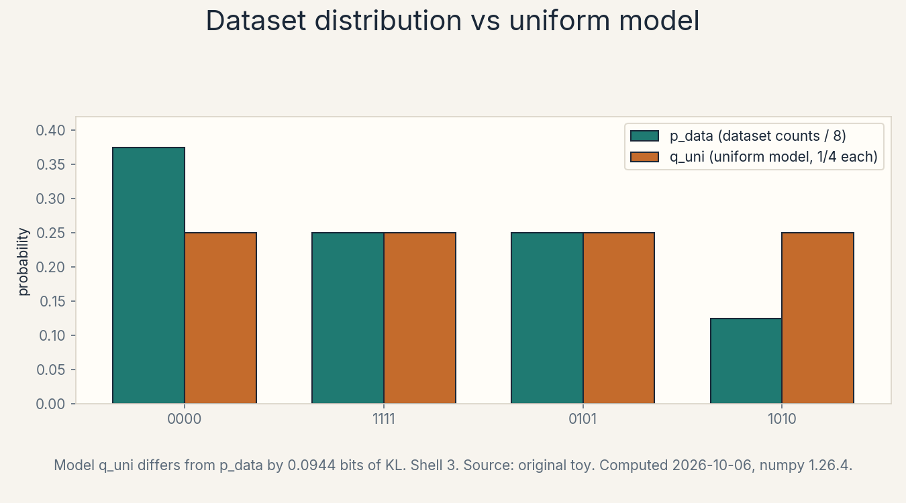

U01 · Probabilistic generative modelling
Lesson 01, Probabilistic generative modelling
Unit: math-genai-U01. Leaf concepts: math-genai-U01-C01 to C12. Date: 2026-10-06. Baseline: October 6, 2026.
Source mapping
This lesson is locally authored prerequisite bridge content. It does not claim to reproduce the instructor’s lectures. Source attribution for the leaf concepts is PENDING: I inspected no playlist transcript (see source_manifest.md SRC-04, source_gaps.md G2). The playlist’s W1_L2 covers the introduction and problem setting by title. Its content is not inspected.
Scope and objectives
Scope: the core objects of every generative model. Data versus model distributions, density versus sample, likelihood, support, latent variables, marginalization, entropy, cross-entropy, KL divergence, divergence choice, estimation, and evaluation.
Objectives: after this lesson the learner can name the true law, the observed counts, and the fitted model as three separate objects, score a model against data with logs, explain why zero mass on real data is fatal, compute entropy, cross-entropy, and KL on a toy by hand, and choose a held-out protocol that does not reward memorization.
Dependencies: prerequisites.md R1-R10. Shared modules P03, P06, P07, P08. No later unit is used.
How to read this lesson
Each section follows one chain. A concrete question opens. A first attempt from zero follows. The attempt breaks with numbers. One hinge question names the gap. The new idea is built from zero. A computed example uses the same objects. Code, checks, costs, alternatives, and a failure case close. Figures carry one claim each. The audit table lives in visual_audit.md.
The running toy: eight tiny image files, each a 4-bit pattern.
0000 appears 3 times
1111 appears 2 times
0101 appears 2 times
1010 appears 1 time
n = 8. Every section uses these same eight files unless it says so.
C01, data versus model distribution
Motivating question: what exactly are we fitting when we train a generator?
Start from zero. Eight files sit on disk. Nobody wrote a formula for them. They came from some unknown law of the world. Call that law p_data. The counts on disk give an empirical stand-in: divide each count by 8.
Figure f01 (table). The claim is a comparison of three objects.

| Pattern | Count | p_hat = count/8 | q_uni = 1/4 each |
|---|---|---|---|
| 0000 | 3 | 0.375 | 0.25 |
| 1111 | 2 | 0.25 | 0.25 |
| 0101 | 2 | 0.25 | 0.25 |
| 1010 | 1 | 0.125 | 0.25 |
Mental model. Three objects, three roles. p_data is the unknown truth. p_hat is the dataset seen as a distribution. q is the model, a formula with knobs. Training turns the knobs so q imitates p_data. The data never changes. The model does.
First attempt from zero. Memorize: set q = p_hat. The model now reproduces the counts exactly. Is the job done?
It breaks with numbers. The counts wobble. Eight files are too few to trust: the true law might give 1010 with probability 0.3, and we just saw it once by luck. The memorizer cannot say that. It claims 1010 has probability 0.125 with total confidence. Memorization confuses the observed pile with the law that made it.
Hinge question. Which object carries the truth, and which objects are allowed to change?
The new idea. p_data is fixed and unknown. p_hat is data, fixed after collection. q is the only object we may change. Generative modelling is the search over q. Two jobs fall out of this: estimate the law (C03, C11), and draw brand-new files from q (C12).
Computed example, same objects. q_uni claims 1/4 for every pattern. Its distance from p_hat is small but nonzero: the KL divergence is 0.0944 bits (computed in C09, numpy 1.26.4).
Figure f01_data_vs_model.png (computed bar chart). Before: p_hat bars. After: q_uni bars beside them. Caption: model q_uni differs from p_hat by 0.0944 bits of KL. Shell 3. Source: original toy.
Implementation. The three objects in code.
counts = {"0000": 3, "1111": 2, "0101": 2, "1010": 1}
n = sum(counts.values())
p_hat = {k: v / n for k, v in counts.items()}
q_uni = {k: 0.25 for k in counts}
assert abs(sum(p_hat.values()) - 1.0) < 1e-12
assert abs(sum(q_uni.values()) - 1.0) < 1e-12
Correctness check. Both tables sum to 1. Expected: p_hat has four entries 0.375, 0.25, 0.25, 0.125.
Costs. K = 4 outcomes. Each table costs O(K) memory. Building p_hat from n items costs O(n) time.
Nearest alternative. An implicit model never writes a table. It only draws samples (a GAN generator works this way). Selection boundary: use a table when K is small and you need probabilities. Use an implicit model when the space is huge and you only need new files.
Failure case. Set q = p_hat and declare victory. The failure is not visible on the training eight. It shows on the next eight, where the memorizer’s confident 0.125 for 1010 meets reality. Counterexample: with n = 1 the memorizer assigns probability 1 to a single pattern.
Assessment. See exercises E01-E02 and ladder L01 in this lesson. Keys in lessons/u01/keys.md.
C02, density versus sample
Motivating question: what is the difference between the formula and one draw from it?
Start from zero. p_hat says P(0000) = 0.375. That number is a claim about odds. The file 0000 sitting on disk is a fact. The claim is the density (mass, for discrete outcomes). The file is the sample.
Mental model. The density is the whole weather map. A sample is one raindrop. You cannot read the map from one drop, and you cannot hold the map by catching a drop.
First attempt from zero. Estimate the law from one sample: the first file is 1111, so declare P(1111) = 1.
It breaks with numbers. Seven of the eight files contradict the claim. One sample carries almost no information about the law. The attempt fails because a sample is a draw, not the distribution.
Hinge question. Which object can we compute with, and which must we estimate?
The new idea. The density is the object of study. Samples are the evidence. Density assigns a number to every possible outcome. A sample is one outcome, drawn with those odds.
Figure f02 (ASCII). The claim is one draw from a named law.
law p_hat: 0000:0.375 1111:0.25 0101:0.25 1010:0.125
one sample: 1111
the sample is a point. the law is the full table.
Caption: a sample is one draw, the density is the odds. Shell 2.
Source: original toy.
Implementation. Draw samples from q_uni and watch the histogram approach the table.
import numpy as np
rng = np.random.default_rng(7)
patterns = ["0000", "1111", "0101", "1010"]
draws = rng.choice(patterns, size=8000)
freq = {p: float((draws == p).mean()) for p in patterns}
assert all(abs(freq[p] - 0.25) < 0.03 for p in patterns)
Correctness check. With 8000 draws each frequency lands within 0.03 of 0.25. Expected output: four frequencies near 0.25. The seed is 7, numpy 1.26.4.
Costs. Drawing n samples costs O(n) time. The histogram costs O(K).
Nearest alternative. For continuous x the density is per-unit mass, p(x) dx, and the table becomes a curve. Selection boundary: mass tables for discrete outcomes, density curves for continuous ones. The sample idea is identical in both.
Failure case. Treat the eight files as the law itself. Then a ninth file 0011 has probability 0, and the model is already wrong about the world. Counterexample: any dataset with n smaller than the number of possible outcomes.
Assessment. See exercise E03. Keys in lessons/u01/keys.md.
C03, likelihood
Motivating question: how do we score one candidate model against the whole dataset at once?
Start from zero. Model q_uni says each file has probability 1/4. The dataset has eight files. If the files are independent draws, the probability of seeing exactly this dataset under the model is the product of the eight probabilities.
Mental model. Likelihood is the model’s bet on the observed data. A high likelihood means the model finds the data unsurprising. A low likelihood means the data embarrasses the model.
First attempt from zero. Multiply eight copies of 1/4. (1/4)^8 = 1/65536 = 0.0000153. The number is tiny and gets tinier with more data. Comparing two tiny products by eye is hopeless.
It breaks with numbers. With n = 1000 files the product has 600 digits. No computer stores that as a normal float. The raw product underflows to zero, and every model scores zero. The idea is right but the arithmetic is unusable.
Hinge question. How do we keep the score exact while the dataset grows?
The new idea. Take the log. The log of a product is a sum. Define
L(theta) = product over i of q_theta(x_i)
l(theta) = sum over i of log q_theta(x_i)
Log is base 2, so the unit is bits. Maximizing L is the same as maximizing l, because log rises everywhere.
Figure f03 (equation block). The claim is the definition.
L(theta) = q(x_1) * q(x_2) * ... * q(x_n)
l(theta) = log q(x_1) + log q(x_2) + ... + log q(x_n)
Caption: likelihood is a product, log-likelihood is a sum.
Shell 2. Source: original.
Computed example, same objects. Under q_uni each file has log mass log(1/4) = -2 bits.
l = 8 * (-2) = -16.0 bits
Under q_emp, the log-likelihood sums the log of each file’s empirical mass.
l = 3*log(3/8) + 2*log(2/8) + 2*log(2/8) + 1*log(1/8)
= 3*(-1.4150) + 2*(-2) + 2*(-2) + 1*(-3)
= -15.2451 bits
The memorizer scores higher: -15.2451 beats -16.0. On training data it always does. That is the warning from C01, now with a number.
Implementation.
import math
logp_uni = [math.log2(0.25)] * 8
assert abs(sum(logp_uni) - (-16.0)) < 1e-9
counts = [3, 2, 2, 1]
masses = [3/8, 2/8, 2/8, 1/8]
ll_emp = sum(c * math.log2(m) for c, m in zip(counts, masses))
assert abs(ll_emp - (-15.245112497836532)) < 1e-9
Correctness check. Both sums match the hand computation. Expected: -16.0 and -15.2451 bits.
Costs. O(n) time, O(1) extra memory: stream the sum, never store the product.
Nearest alternative. Mean log-likelihood, l/n, divides by the dataset size. Selection boundary: use the total when one dataset is fixed. Use the mean when datasets differ in size, so scores stay comparable.
Failure case. Compare raw products across datasets of different size. The longer dataset always loses, because it multiplies more numbers below 1. Counterexample: n = 8 scores 1/65536, n = 9 scores 1/262144, so the better model on more data looks worse.
Assessment. See exercises E04-E05 and ladder L02 in this lesson. Keys in lessons/u01/keys.md.
C04, support
Motivating question: what happens when the model calls a real file impossible?
Start from zero. Model q_bad says P(0000) = 1/2, P(1111) = 1/2, and zero for 0101 and 1010. The dataset contains 0101 twice and 1010 once. The model assigns those three files probability zero.
Mental model. The support is the set of outcomes the model admits exist. Outside the support the model is not wrong, it is silent. A likelihood that touches a zero becomes zero. A log-likelihood that touches a zero becomes negative infinity.
First attempt from zero. Score the dataset under q_bad and hope the zeros do not matter.
It breaks with numbers. The log-likelihood sums one term per file. Three files contribute log(0) = -infinity. The total is -infinity. The model is infinitely surprised by data it already saw. No finite score can rank it against anything.
Hinge question. What must a model promise before it may score data?
The new idea. The model support must cover the data support. Every observed outcome needs positive model mass. This is a hard requirement, not a preference. Cross-entropy under q_bad is infinite:
H(p_hat, q_bad) = -(2/8)*log(0) - (1/8)*log(0) = +infinity
Figure f04 (table). The claim is a support comparison.
| Model | Support | Covers the 8 files? | Log-likelihood |
|---|---|---|---|
| q_uni | all 4 patterns | yes | -16.0 bits |
| q_emp | all 4 patterns | yes | -15.2451 bits |
| q_bad | 0000, 1111 only | no | -infinity |
Caption: a model must give positive mass to every observed file. Shell 7 (broken assumption). Source: original toy.
Implementation. A support check that runs before any scoring.
def check_support(counts, model):
missing = [k for k in counts if model.get(k, 0.0) <= 0.0]
assert not missing, f"zero mass on observed: {missing}"
q_bad = {"0000": 0.5, "1111": 0.5, "0101": 0.0, "1010": 0.0}
counts = {"0000": 3, "1111": 2, "0101": 2, "1010": 1}
try:
check_support(counts, q_bad)
ok = True
except AssertionError:
ok = False
assert ok is False
Correctness check. The check raises on 0101 and 1010. Expected: ok is False.
Costs. O(K) to scan the table. Free compared with training.
Nearest alternative. Smoothed models add a tiny epsilon to every outcome, so the support is everything. Selection boundary: smooth when zero counts are a data accident. Keep the sharp support when a zero is a true physical impossibility.
Failure case. Train a model family that cannot emit some real pattern, then score it with cross-entropy and get NaN. The NaN is not a bug in the code. It is the support violation, reported honestly. Counterexample: q_bad above.
Assessment. See exercise E06 and ladder L03 in this lesson. Keys in lessons/u01/keys.md.
C05, latent variables
Motivating question: how do we model structure we cannot see?
Start from zero. A coin lands heads 55 times in 100 flips. A single coin with bias 0.55 explains this. But suppose the truth is two coins in a bag: coin A lands heads with probability 0.9, coin B with probability 0.2, and we pick one at random each flip. The observed rate is still 0.55. One number, two stories.
Mental model. A latent variable is a hidden label that explains correlation. We never observe it. We observe only its effects. The label z says which coin was used. The flip x is the visible result.
First attempt from zero. Fit one coin with bias 0.55 and stop.
It breaks with numbers. The one-coin story predicts that knowing the first flip tells you nothing new about the second. The two-coin story predicts streaks: a head suggests coin A, which makes the next head more likely. The data can distinguish these stories, but the one-coin model cannot even state the difference.
Hinge question. How do we write a model whose parts we never observe?
The new idea. Name the hidden part z and write the joint model p(x, z) = p(z) p(x | z). The prior p(z) says how often each hidden label occurs. The conditional p(x | z) says what each label produces. For the coins:
Figure f05 (table). The claim is the joint model.
| z | p(z) | p(heads | z) | p(tails | z) | |—|—|—|—| | A | 0.5 | 0.9 | 0.1 | | B | 0.5 | 0.2 | 0.8 |
Caption: the latent label z explains the visible flips. Shell 2. Source: original toy.
Computed example, same objects. The joint probabilities:
p(A, heads) = 0.5 * 0.9 = 0.45
p(B, heads) = 0.5 * 0.2 = 0.10
p(A, tails) = 0.5 * 0.1 = 0.05
p(B, tails) = 0.5 * 0.8 = 0.40
Implementation.
prior = {"A": 0.5, "B": 0.5}
cond = {"A": {"H": 0.9, "T": 0.1}, "B": {"H": 0.2, "T": 0.8}}
joint = {(z, x): prior[z] * cond[z][x] for z in prior for x in "HT"}
assert abs(sum(joint.values()) - 1.0) < 1e-12
assert abs(joint[("A", "H")] - 0.45) < 1e-12
Correctness check. The joint sums to 1. Expected: 0.45, 0.10, 0.05, 0.40.
Costs. With K values of z and M outcomes, the joint table costs O(K * M) memory.
Nearest alternative. A model with no latent part: one coin, one bias. Selection boundary: add a latent variable when the visible data shows structure (streaks, clusters, mixtures) that a flat model cannot express. The price is inference: z is hidden, so it must be summed out (C06).
Failure case. Condition on z as if it were observed. The model then claims to know which coin was used on each flip, which the data never says. Counterexample: p(heads | z = A) = 0.9 is not the answer to “what is P(heads)”. The observed rate is 0.55.
Assessment. See exercises E07-E08. Keys in lessons/u01/keys.md.
C06, marginalization
Motivating question: how do we get predictions about x alone when the model also talks about z?
Start from zero. The joint table from C05 has four entries. The learner observes only heads and tails. The hidden label must go.
Mental model. Marginalization adds up over the things you do not see. The total probability of heads is the heads-with-A probability plus the heads-with-B probability.
First attempt from zero. Average the two conditional rates: (0.9 + 0.2) / 2 = 0.55. That happens to be right here, but only because the prior is 1/2 each. With p(z = A) = 0.9 the average would be wrong.
It breaks with numbers. Change the prior to p(A) = 0.9, p(B) = 0.1. The naive average still says 0.55. The correct total is 0.9 * 0.9 + 0.1 * 0.2 = 0.83. The naive average ignores how often each label occurs.
Hinge question. What is the one rule that removes z correctly?
The new idea. Weight by the prior, then sum.
p(x) = sum over z of p(x, z) = sum over z of p(z) p(x | z)
Figure f06 (table). The claim is the sum that removes z.
| z = A | z = B | marginal p(x) | |
|---|---|---|---|
| x = heads | 0.45 | 0.10 | 0.55 |
| x = tails | 0.05 | 0.40 | 0.45 |
Caption: sum across z to reach the visible law. Shell 3. Source: original toy.
Computed example, same objects.
p(heads) = 0.5 * 0.9 + 0.5 * 0.2 = 0.45 + 0.10 = 0.55
p(tails) = 0.5 * 0.1 + 0.5 * 0.8 = 0.05 + 0.40 = 0.45
Bayes flips the question: after seeing heads, which coin was it?
p(A | heads) = p(A, heads) / p(heads) = 0.45 / 0.55 = 0.8182
Implementation.
joint = {("A", "H"): 0.45, ("B", "H"): 0.10,
("A", "T"): 0.05, ("B", "T"): 0.40}
marginal = {"H": joint[("A", "H")] + joint[("B", "H")],
"T": joint[("A", "T")] + joint[("B", "T")]}
assert abs(marginal["H"] - 0.55) < 1e-12
posterior_A = joint[("A", "H")] / marginal["H"]
assert abs(posterior_A - 0.8181818181818181) < 1e-9
Correctness check. Marginals sum to 1. Posterior is 0.8182.
Costs. Summing over K latent values costs O(K) per x.
Nearest alternative. For continuous z the sum becomes an integral, which is usually intractable. Selection boundary: exact sums for small discrete z. Approximate inference (sampling, variational bounds) when z is large or continuous. That is the road to U02 and U05.
Failure case. Sum over x instead of z. Summing p(x, z) over x gives p(z) = 0.5, the prior, which answers a different question. Counterexample: p(heads) computed as 0.45 + 0.05 = 0.50 sums down the wrong axis.
Assessment. See exercises E09-E10 and ladder L03 in this lesson. Keys in lessons/u01/keys.md.
C07, entropy
Motivating question: how much uncertainty does a distribution hold?
Start from zero. p_hat gives 0000 with probability 0.375. If you must guess the next file, how surprised will you be on average?
Mental model. Surprisal is -log p(x), the bits needed to name one draw. A rare outcome surprises more. Entropy is the average surprisal: H(p) = sum over x of p(x) * (-log p(x)).
First attempt from zero. Guess the most common pattern every time. You are right 37.5 percent of the time. That number is about the best single guess, not about the uncertainty.
It breaks with numbers. The most-common guess ignores the other three patterns entirely. A fair measure must account for every outcome and its odds.
Hinge question. What single number summarizes the whole odds table?
The new idea. Weight each outcome’s surprisal by its probability and add.
Figure f07 (equation block). The claim is the definition.
H(p) = -[p(0000)*log p(0000) + p(1111)*log p(1111)
+ p(0101)*log p(0101) + p(1010)*log p(1010)]
Caption: entropy is expected surprisal, in bits. Shell 2.
Source: original.
Computed example, same objects.
H(p_hat) = -[0.375*log(0.375) + 0.25*log(0.25)
+ 0.25*log(0.25) + 0.125*log(0.125)]
= -[0.375*(-1.4150) + 0.25*(-2) + 0.25*(-2)
+ 0.125*(-3)]
= 0.5306 + 0.5 + 0.5 + 0.375
= 1.9056 bits
Sanity anchors: a uniform law over 4 outcomes has entropy log(4) = 2 bits. A law with all mass on one outcome has entropy 0. Our 1.9056 sits just below 2, because p_hat is close to uniform.
Implementation.
import math
p = [0.375, 0.25, 0.25, 0.125]
H = -sum(pi * math.log2(pi) for pi in p)
assert abs(H - 1.9056390622295665) < 1e-9
assert 0.0 <= H <= 2.0
Correctness check. H = 1.9056 bits, inside [0, 2].
Costs. O(K) time for K outcomes.
Nearest alternative. Entropy in nats uses natural log. Selection boundary: bits for coding and compression talk, nats for calculus and gradients. The course uses bits. Shared modules note the base at each use.
Failure case. Compute the entropy of the raw counts (3, 2, 2, 1) without dividing by n. The “probabilities” sum to 8, logs go positive, and the result is meaningless. Counterexample: always normalize first.
Assessment. See exercises E11-E12 and ladder L04 in this lesson. Keys in lessons/u01/keys.md.
C08, cross-entropy
Motivating question: how do we score a model using the true odds?
Start from zero. The data comes from p_hat. The model q_uni claims 1/4 everywhere. Score the model by the data: for each outcome, take the model’s surprisal -log q(x), and average it with the data’s odds p_hat(x).
Mental model. Cross-entropy is the price of believing q while the world runs p. If q matches p, the price equals the entropy. If q is wrong, the price is higher.
First attempt from zero. Average the model’s surprisal with the model’s own odds: -sum q(x) log q(x). That is just the model’s entropy, 2 bits. It never looks at the data.
It breaks with numbers. A model can be confidently wrong about the data and still score 2 bits against itself. The score must weight by p, the data, or it measures nothing about fit.
Hinge question. Whose odds weight the average?
The new idea. The data’s odds weight the model’s surprisal.
H(p, q) = -sum over x of p(x) * log q(x)
Figure f08 (equation block). The claim is the definition.
H(p_hat, q_uni) = -[0.375*log(0.25) + 0.25*log(0.25)
+ 0.25*log(0.25) + 0.125*log(0.25)]
Caption: cross-entropy weights model surprisal by data odds.
Shell 3. Source: original toy.
Computed example, same objects. log(0.25) = -2 for every term.
H(p_hat, q_uni) = 0.375*2 + 0.25*2 + 0.25*2 + 0.125*2 = 2.0 bits
Check: 2.0 >= 1.9056 = H(p_hat). Cross-entropy never beats the entropy of p. The gap is the subject of C09.
Implementation.
import math
p = [0.375, 0.25, 0.25, 0.125]
q = [0.25, 0.25, 0.25, 0.25]
CE = -sum(pi * math.log2(qi) for pi, qi in zip(p, q))
assert abs(CE - 2.0) < 1e-12
Correctness check. CE = 2.0 bits, above the entropy 1.9056.
Costs. O(K) time.
Nearest alternative. The negative log-likelihood per item on a large dataset converges to the cross-entropy. Selection boundary: cross-entropy for the population statement, mean log-likelihood for the finite-sample computation.
Failure case. Swap the roles: H(q, p) weights p’s surprisal by q’s odds. Compute H(q_uni, q_emp) = -(1/4)[log(3/8) + log(2/8) + log(2/8) + log(1/8)] = 2.1038 bits, not 2.0. Cross-entropy is not symmetric. Counterexample: the two orders give different numbers.
Assessment. See exercises E13-E14. Keys in lessons/u01/keys.md.
C09, KL divergence
Motivating question: how many extra bits does the wrong model cost?
Start from zero. The data needs 1.9056 bits per file under its own odds. Believing q_uni costs 2.0 bits per file. The difference, 0.0944 bits, is the price of the wrong model.
Mental model. KL divergence is the surcharge. Cross-entropy is the total bill, entropy is the unavoidable part, KL is the part the model choice caused.
First attempt from zero. Report the cross-entropy 2.0 as the model quality.
It breaks with numbers. Two different datasets can give the same model the same cross-entropy for entirely different reasons: one because the data is inherently noisy, one because the model is bad. The raw bill does not separate the two.
Hinge question. How do we isolate the model’s fault from the data’s noise?
The new idea. Subtract the entropy.
D_KL(p || q) = H(p, q) - H(p) = sum over x of p(x) * log(p(x)/q(x))
Figure f09 (equation block). The claim is the definition.
D_KL(p_hat || q_uni) = 2.0 - 1.9056 = 0.0944 bits
Caption: KL is the surcharge over the unavoidable entropy.
Shell 3. Source: original toy.
Computed example, same objects. Term by term with the log ratio:
0.375*log(0.375/0.25) + 0.25*log(0.25/0.25)
+ 0.25*log(0.25/0.25) + 0.125*log(0.125/0.25)
= 0.375*0.5850 + 0 + 0 + 0.125*(-1)
= 0.2194 - 0.125 = 0.0944 bits
Matches the subtraction: 2.0 - 1.9056 = 0.0944.
Implementation.
import math
p = [0.375, 0.25, 0.25, 0.125]
q = [0.25, 0.25, 0.25, 0.25]
KL = sum(pi * math.log2(pi / qi) for pi, qi in zip(p, q))
assert abs(KL - 0.09436093777043353) < 1e-9
assert KL >= 0.0
Correctness check. KL = 0.0944 bits, nonnegative. KL(q_emp || q_emp) = 0 exactly.
Costs. O(K) time.
Nearest alternative. The log-ratio form shows each outcome’s contribution. Selection boundary: use the subtraction form to explain, the ratio form to debug which outcomes drive the gap.
Failure case. Treat KL as a distance. It is not symmetric: D_KL(p || q) != D_KL(q || p) in general, and it has no triangle inequality. Counterexample: C08 computed H(q_uni, q_emp) = 2.1038 while H(q_uni) = 2.0, so D_KL(q_uni || q_emp) = 0.1038, which differs from 0.0944.
Assessment. See exercises E15-E16 and ladder L04 in this lesson. Keys in lessons/u01/keys.md.
C10, divergence choice
Motivating question: is KL the only way to score the difference between two distributions?
Start from zero. KL gave q_uni a surcharge of 0.0944 bits over p_hat. Another ruler is total variation: half the L1 distance.
TV(p, q) = (1/2) * sum over x of |p(x) - q(x)|
Mental model. KL asks “how much extra coding cost”. TV asks “how much mass must move to turn one table into the other”. Different questions, different rulers.
First attempt from zero. Declare KL the universal score.
It breaks with numbers. Under q_bad, KL is infinite (C04). TV is finite: TV(p_hat, q_bad) = (1/2)(|0.375-0.5| + |0.25-0.5| + |0.25-0| + |0.125-0|) = (1/2)(0.125 + 0.25 + 0.25 + 0.125) = 0.375. When a model misses support, KL refuses to rank it at all while TV still gives a number.
Hinge question. What breaks under each ruler, and when does that matter?
The new idea. No ruler is neutral. Each choice bakes in an assumption about what differences count.
Figure f10 (table). The claim is a ruler comparison.
| Ruler | q_uni vs p_hat | q_bad vs p_hat | Behavior on support miss |
|---|---|---|---|
| KL (bits) | 0.0944 | infinity | refuses, infinite |
| TV | 0.125 | 0.375 | finite, capped at 1 |
Caption: the ruler decides what a miss costs. Shell 8 (compare nearest alternative). Source: original toy.
Computed example, same objects. TV(p_hat, q_uni) = (1/2)(0.125 + 0 + 0 + 0.125) = 0.125.
Implementation.
p = [0.375, 0.25, 0.25, 0.125]
q = [0.25, 0.25, 0.25, 0.25]
TV = 0.5 * sum(abs(pi - qi) for pi, qi in zip(p, q))
assert abs(TV - 0.125) < 1e-12
Correctness check. TV = 0.125, inside [0, 1].
Costs. O(K) time.
Nearest alternative. Jensen-Shannon symmetrizes KL and stays finite. Wasserstein measures the cost of moving mass. Selection boundary: KL when you train by likelihood and need gradients that punish zero mass hard. Bounded or geometric divergences when models miss support during training. U02, U03, and U04 build these rulers in full.
Failure case. Train with KL on a model family that cannot cover the data, watch the loss go to infinity, and conclude the data is bad. The data is fine. The ruler-family pairing is wrong. Counterexample: q_bad scored by KL.
Assessment. See exercise E17 and ladder L05 in this lesson. Keys in lessons/u01/keys.md.
C11, estimation
Motivating question: how do we turn data into a parameter value?
Start from zero. Ten coin flips land heads 7 times. The model is one coin with unknown bias theta. Which theta should we report?
Mental model. An estimator is a rule from data to parameter. The maximum likelihood estimator picks the theta that maximizes the log-likelihood of the observed data.
First attempt from zero. Guess theta = 0.5 by symmetry.
It breaks with numbers. Log-likelihood at 0.5: 7log(0.5) + 3log(0.5) = -10.0 bits. At 0.7: 7log(0.7) + 3log(0.3) = 7(-0.5146) + 3(-1.7370) = -3.6021 - 5.2109 = -8.8129 bits. The data prefers 0.7 by 1.19 bits.
Hinge question. Is there a formula, or must we search?
The new idea. Differentiate the log-likelihood and set it to zero.
l(theta) = k*log(theta) + (n-k)*log(1-theta)
dl/d theta = k/theta - (n-k)/(1-theta) = 0
theta = k/n
For k = 7, n = 10: theta = 0.7. The estimate is the observed frequency. This is not a coincidence to memorize. It falls out of the derivative.
Figure f11 (table). The claim is the MLE pick.
| theta | log-likelihood (bits) | verdict |
|---|---|---|
| 0.3 | -13.70 | worse |
| 0.5 | -10.00 | worse |
| 0.7 | -8.81 | best |
| 0.9 | -11.03 | worse |
Caption: the data picks theta = 0.7. Shell 3. Source: original toy, computed 2026-10-06.
Implementation. Grid search that agrees with the formula.
import math
k, n = 7, 10
def ll(t):
return k * math.log2(t) + (n - k) * math.log2(1 - t)
grid = [0.3, 0.5, 0.7, 0.9]
best = max(grid, key=ll)
assert best == 0.7
assert abs(k / n - 0.7) < 1e-12
Correctness check. Grid and formula agree at 0.7.
Costs. O(n) to count, O(1) to divide.
Nearest alternative. Add a prior and maximize the posterior instead (MAP). Selection boundary: MLE when data is plentiful, MAP when n is tiny and a prior carries real knowledge. U05 uses priors on latent variables.
Failure case. One flip lands heads. MLE says theta = 1: a certain coin from one observation. The estimator is unbiased in the long run but absurd on tiny data. Counterexample: n = 1, k = 1.
Assessment. See exercises E18-E19. Keys in lessons/u01/keys.md.
C12, evaluation
Motivating question: how do we know the model works on data it has never seen?
Start from zero. q_emp memorized the eight training files and won the training log-likelihood (-15.2451 vs -16.0). Declare q_emp the winner.
It breaks with numbers. The training score always favors the memorizer. That is not evidence. It is the definition of fitting. A model that copies the answer sheet passes its own exam.
Hinge question. What data may judge the model?
The new idea. Held-out data: fresh files the model never trained on. Score each model by mean log-likelihood per held-out file. Higher wins.
Computed example, same objects. Four new files arrive: 0000 twice, 1111 once, 0101 once.
mean log-mass under q_uni = log(0.25) = -2.0 bits per file
mean log-mass under q_emp =
[2*log(3/8) + 1*log(2/8) + 1*log(2/8)] / 4
= [2*(-1.4150) + (-2) + (-2)] / 4
= -6.8301 / 4 = -1.7075 bits per file
q_emp still wins here (-1.7075 > -2.0), because the held-out files happen to follow the training pattern. The protocol is the point, not the winner: on different held-out data the memorizer can lose.
Figure f12 (table). The claim is the held-out comparison.
| Model | Train mean LL | Held-out mean LL |
|---|---|---|
| q_uni | -2.0 | -2.0 |
| q_emp | -1.9056 | -1.7075 |
Caption: judge on data the model never saw. Shell 6 (change one factor: train vs held-out). Source: original toy.
A second protocol: sample. Draw 8 files from q_uni and inspect them. Samples test the generator’s output directly, while log-likelihood tests its probabilities. Both matter: a model can assign good probabilities yet draw ugly files, or draw nice files from a broken density.
Implementation.
import math
held = {"0000": 2, "1111": 1, "0101": 1}
q_emp = {"0000": 3/8, "1111": 2/8, "0101": 2/8, "1010": 1/8}
m = sum(held.values())
mean_uni = sum(c * math.log2(0.25) for c in held.values()) / m
mean_emp = sum(c * math.log2(q_emp[k]) for k, c in held.items()) / m
assert abs(mean_uni - (-2.0)) < 1e-12
assert abs(mean_emp - (-1.707518749639422)) < 1e-9
assert mean_emp > mean_uni
Correctness check. Held-out means are -2.0 and -1.7075 bits.
Costs. O(m) for m held-out items.
Nearest alternative. Sample-based scores (in the GAN weeks, classifier-based and distance-based scores). Selection boundary: likelihood when the model gives probabilities, sample scores when it only draws. U03 and U04 live on the sample side.
Failure case. Evaluate on the training eight and ship q_emp as a general model of 4-bit files. The training score cannot detect memorization. Counterexample: with n = 1 the training score of the memorizer is 0 bits (perfect) and the model knows nothing.
Assessment. See exercise E20 and ladder L05 in this lesson. Keys in lessons/u01/keys.md.
Chapter plate
Cost without the ideas: every model is a black box, and the only score is “looks good to me”. Cost with the ideas: three named objects (p_data, p_hat, q), one scoring rule (log-likelihood sums), one fatal check (support coverage), one surcharge (KL = 0.0944 bits on the toy), and one honest protocol (held-out data). Tradeoff in one line: rigor costs one extra dataset split and gains a score that cannot be gamed by memorization. Connection: every later unit reuses these objects. GANs replace the likelihood with a game (U03). VAEs bound it from below (U05). Diffusion models chain it across noise steps (U07).
Lesson exercises (questions. Answers in lessons/u01/keys.md)
E01. Name the three objects p_data, p_hat, q_uni in the toy, and state which one training is allowed to change. E02. With n = 1 and one observed 0000, what does the memorizer q = p_hat claim? Why is the claim absurd? E03. Draw one sample from q_uni by hand using a die (map faces to patterns). Is that sample the distribution? Explain. E04. Compute by hand the log-likelihood of the 8 files under a model that gives each pattern probability 1/8 on an 8-outcome space. Give the number in bits. E05. Why does the lesson use log-likelihood instead of likelihood? Name the exact failure. E06. A model gives mass 0 to 1010 but the data contains it once. What is the log-likelihood? What check would have caught this before scoring? E07. In the coin toy, what does z = A mean in words? Is z observed? E08. Change the prior to p(A) = 0.9. Recompute p(heads). E09. Compute p(tails) by marginalization. Show the sum. E10. After seeing tails, compute p(B | tails). Show the division. E11. Compute H for a fair coin. Compute H for a coin with P(heads) = 1. Which is larger, and why? E12. A classmate computes entropy from counts (3, 2, 2, 1) without dividing by 8. What goes wrong? E13. Compute H(p_hat, q_emp). Compare with H(p_hat). What does the gap mean? E14. Explain in two sentences why H(p, q) weights by p and not by q. E15. Compute D_KL(p_hat || q_uni) by the ratio form. Show two terms. E16. Is D_KL(p || q) = D_KL(q || p)? Use numbers from the lesson to decide. E17. A model misses support. Which ruler, KL or TV, still ranks models? Give the TV number from the lesson. E18. 3 heads in 10 flips. What is the MLE of theta? Show the derivative step. E19. n = 2, both heads. The MLE says theta = 1. Is the estimator wrong? Explain the right lesson. E20. A new model scores -1.5 bits per held-out file. Does it beat q_emp? What would you check before believing the number?
Deep oral ladders (questions. Answers in lessons/u01/keys.md)
L01. Define p_data, p_hat, and q in one sentence each. Toy: our eight files. Derive p_hat from the counts. Implement the check that both tables sum to 1. Compare the memorizer with q_uni on training data. Debug: a table sums to 1.3. Critique: when does p_hat mislead about p_data? Design: how would you test whether 8 more files follow p_hat?
L02. Define likelihood in words. Toy: score q_uni on the eight files. Derive the log step from the product. Implement the sum in code. Complexity of scoring n files. Compare total vs mean log-likelihood. Debug: the product underflows to 0.0 at n = 2000. Critique: why does training likelihood favor the memorizer? Design: propose a protocol that does not.
L03. Define support. Toy: q_bad on the eight files. Derive why log(0) breaks the score. Implement the support check. Compare KL vs TV on q_bad. Debug: training loss prints NaN at step 0. Critique: is infinite KL a bug or a message? Design: how would you repair q_bad with the smallest change?
L04. Define entropy, cross-entropy, KL, each in one sentence. Toy: compute all three for p_hat and q_uni. Derive KL = CE - H from the sums. Implement all three in five lines. Complexity in K. Compare the ratio form with the subtraction form. Debug: KL comes out negative. Critique: which assumption did the code break? Design: how would you estimate H(p_data) when p_data is unknown?
L05. Define estimation and evaluation in one sentence each. Toy: MLE on 7 heads of 10. Derive theta = k/n. Implement the grid search. Compare MLE with a prior-based estimate on n = 2. Debug: held-out score beats training score. Critique: can that happen honestly? Design: split 100 files into train, validation, test and say what each split decides.
Implementation and debug task
Write a function score(counts, model) that returns the mean log-likelihood per item, raises on support violation, and asserts probabilities sum to 1 within 1e-9. Then debug this broken version: it returns 0.0 for q_bad instead of raising. Find the bug (it replaces log(0) with 0.0 silently). Fix it. Keys in lessons/u01/keys.md.
Changed-constraint scenarios
S1. The patterns grow to 64 bits (K = 2^64 outcomes). Which parts of this lesson still work? Which break? Name the first thing to change. S2. The dataset has n = 1,000,000 files but only 4 distinct patterns. Does the memorizer still overfit? Explain with the support and entropy numbers.
Research-critique question
A paper reports a generative model with “zero training loss” on a dataset of 10,000 images and claims the model learned the true distribution. Using C01, C03, and C12, name three distinct flaws in the claim and the measurement that would expose each.
Not-yet-understood dependency list (for RUN 2)
- Jensen inequality and why log-likelihood needs a lower bound when z is continuous (U02, W5T10).
- How a minimax game replaces likelihood (U03, W2_L6/L7).
- Why the ELBO splits into reconstruction plus KL (U05, W5L18).
- How noise schedules keep the DDPM posterior tractable (U07, W7L27).